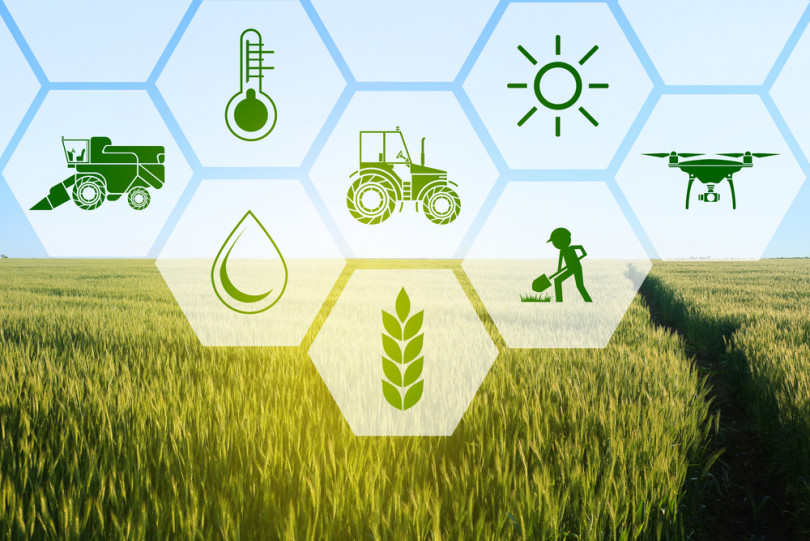
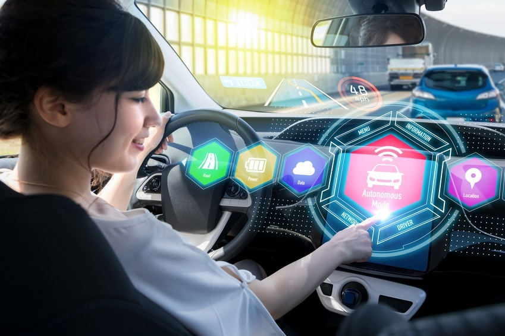
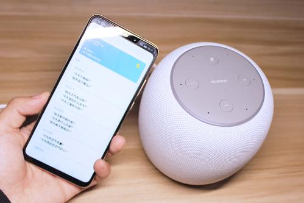

専門学校ITカレッジ沖縄
IT+AI時代！
ITは全ての仕事につながる世界。
学科紹介
サイバーセキュリティ科
県内唯一、
ホワイトハッカーとセキュリティのプロを目指す
ホテルや病院でAIロボット＋ITサービス！
顧客データベースを作ったり、パーソナルファイアを守るセキュリティシステム等、公共システムの構築にはIT技術が欠かせません。近年では、ITでの遠隔医療や外国人をもてなすAIロボットも活躍しています。

農業の課題を解決！
生産・経営・販売を幅広く管理できる農業クラウド、衛星やドローンの画像で畑の状況を確認するなど、様々な課題がIT技術で解決されています！

車の自動運動や信号、パーキングまで
事故を未然に防いだり快適な運転環境のためのシステムなど、IT技術により車は、ますます便利になっています。情報ネットワークシステムにより渋滞も軽減。車社会には必須のIT。
ITスペシャリスト科
しっかり学べる3年制
システム開発のエキスパートになる
AIとIoT家電で未来の家庭が変わる？
ロボット掃除機「ルンバ」や全自動衣類折り畳みロボットなど家事をサポートする家電がぞくぞく登場！人が家事を行わなくなる時代もそう遠くはないのかもしれません。
ショッピングの時のセルフレジやエアレジもIT技術
キャッシュレスの時代に合わせて、どんどん進化しているショッピングシステム。これからのスーパーは、最新のIT技術で溢れている！

スマホ・PCのAIアプリが登場
スマホやPCで使われているアプリは、クラウドと連携して利用するAIです。「Googleアシスタント」や「Siri」などの音声アシスタントにも用いられています。
AIがユーザーの癖を覚えて操作しやすくする機能などが続々と開発されています。
| 時間 | 項目 | |
|---|---|---|
| 前半 | 4~6月 | 入学式、新入生球技大会、IT Fundamentals試験、Rasti試験、研修旅行、健康診断、サーティファイJava試験 |
| 7~9月 | ビジネス能力検定B検ジョブパス、CGクリエイター検定、仕事ミュージアム、ガイカレフェスタ、プレゼンテーション大会、Oracle Java Bronze試験、SEA/J基礎、応用試験、夏季休暇、ビーチパーティ、Game Jam、三者面談 | |
| 後半 | 10~12月 | 後期開始、就活キックオフ、秋季球技大会、Com Master、ITパスポート試験、卒業研究発表会、冬季休暇 |
| 1~3月 | IT津梁まつり、後期テスト、ガイカレフェア、Network+試験、Oracle Database12c SQL基礎試験、LinuC、卒業式、春季休暇 | |